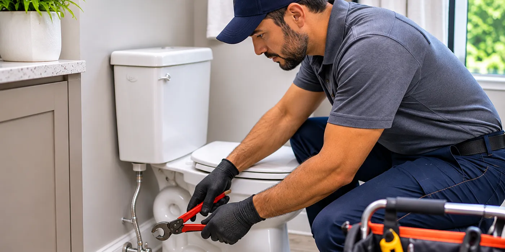

Pipe Leak Repair in Cedar Park, TX
We trace leaking pipes, isolate the water, and repair damaged joints and fittings.
A towel beneath a cabinet, a bowl under a drip, and a closed fixture shutoff are sensible first steps when water appears where it should not. They catch water and can limit damage to a cabinet floor, baseboard, or countertop while you look for the source. But a towel cannot stop water moving through a pinhole, a loose fitting, or a split section of pipe behind the wall.
Water can travel along framing, insulation, and drywall before it makes a visible stain on a ceiling or wall. A small drip inside a cabinet can also swell particleboard, damage flooring, and create a mildew odor. Pipe leak repair should not wait because water keeps reaching building materials even after the visible puddle has been wiped up.
Water stains and hissing
People call us about a brown ring spreading across a ceiling, a hissing sound behind a bathroom wall, or a damp patch under a kitchen sink that returns after drying. Others notice a cabinet floor that stays wet, peeling paint near a baseboard, or a water meter that keeps moving while every faucet remains off. A warm spot on a slab floor can point to a hot-water line, while a musty odor from a closet may come from moisture trapped behind drywall. A pinhole in copper pipe, a failed fitting, and a leaking valve connection can look much alike at first, but each fault requires different materials, access work, and labor.
Leak inspection
We start a leak inspection by locating the wet area, checking exposed pipe and fittings, and asking where water first appeared. We read the water meter, check fixture shutoffs, and measure static water pressure; residential supply pressure commonly falls between 40 and 80 psi. A first inspection often takes 30 to 60 minutes, depending on whether the pipe runs through a cabinet, crawlspace, wall, ceiling, or slab.
For an exposed copper, PEX, or CPVC line, we can often isolate the water, remove the damaged section, and install new pipe and fittings on the same visit. We check common 1/2-inch and 3/4-inch branch lines for corrosion, rubbing, loose supports, and failed joints before restoring water. A leak behind tile, under a slab, or inside a finished wall may need a return visit after access is opened, replacement pipe is obtained, or the repair area can be reached without damaging more drywall.
Shutoffs, walls, and pipe
Pipe material, wall access, and the condition of nearby shutoff valves all change the scope of a repair. An exposed copper elbow under a sink usually takes less access work than a damaged pipe behind tile, cabinetry, concrete, or ceiling drywall. If a corroded shutoff will not close, we may need to isolate water farther back on the line before the damaged fitting can be removed.
Older galvanized pipe can shed rust inside the line, and a repair may reveal that adjacent threaded sections need attention as well. A specialty fitting or matching section of pipe may need to be ordered if the existing material or connection does not match standard stock. Work that requires wall restoration, property approval, or municipal sign-off adds separate steps beyond repairing the leaking pipe itself.
Pipe material and wall access
Before calling, note which room has the leak, whether it is under a sink, above a ceiling, behind a wall, or near an appliance water connection. If pipe is visible, a clear photo can show whether it is copper, PEX, CPVC, or galvanized steel and whether a shutoff valve sits nearby. Tell us if water continues to run with the fixture shutoff closed, or if the water meter moves after faucets and appliances have been turned off.
Let us know whether a cabinet, crawlspace hatch, attic opening, or removable drywall panel provides access to the pipe. If the leak sits near a dishwasher, refrigerator, or washing machine connection, the appliance model label can help identify the supply setup. Call JPT Cedar Park Plumbing at (512) 818-1571 before water reaches more framing, insulation, ceiling drywall, or flooring.
When we are open
Outside these hours, leave a message and we will call back.
Next: faucet repair, or back to the home page.